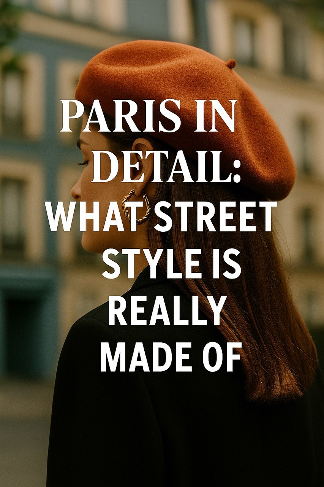

Paris in Detail: What Street Style Is Really Made Of
Paris isn’t just fashion week and runways. It’s in the folds of scarves, the tilt of a beret, the swing of a crossbody bag.
While the world looks to the big houses and haute couture for inspiration, true Parisian style is found in the details walking quietly through Le Marais and Saint-Germain. It’s not loud — it whispers. A scarf tied just so. A coat worn slightly oversized. Confidence worn like a signature scent.
This week, Style Atlas followed the everyday looks that reflect the core of French style: practical, elegant, intentional. From young women in vintage Chanel to modern minimalists in oversized frames, one thing is certain — Paris doesn’t copy trends. It sets them.
And this season? Accessories are the story. Scarves, berets, gold earrings — subtle, powerful and personal.
Published: 2025-05-11
← Back to News